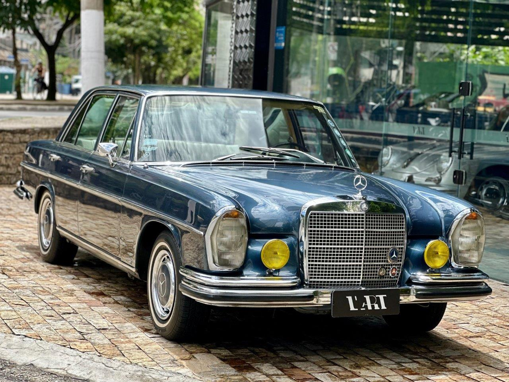

Em 1972 o 280 S era a transição: o W108 saía de cena após 5 anos como sedã de entrada da linha S, com motor M130 de 140 cv. Ao mesmo tempo nascia o W116, que levava o 280 S para um novo patamar com motor mais potente, construção mais segura e luxos revisados — base da fama duradoura da Classe S.
3. Mercedez-Benz 280s (1972)
